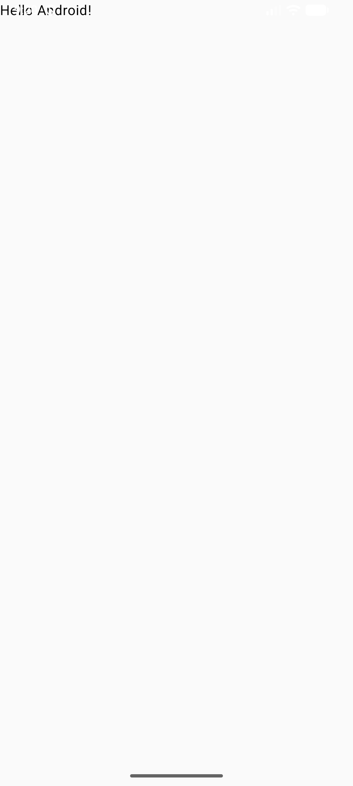

Ejecución y Depuración
En esta sección, aprenderemos cómo ejecutar y depurar nuestra aplicación Android utilizando Android Studio. La ejecución y depuración son pasos importantes en el desarrollo de aplicaciones, ya que nos permiten probar nuestro código y encontrar errores o problemas en nuestra aplicación.
Hemos creado nuestra primera aplicación Android, y ahora es el momento de ejecutarla para ver cómo funciona. Para ejecutar nuestra aplicación, podemos utilizar un dispositivo físico o un emulador de Android.
Podemos optar por ejecutar nuestra aplicación en un dispositivo físico conectado a nuestra computadora mediante un cable USB, o podemos utilizar un emulador de Android que simula un dispositivo en nuestra computadora.
Vamos a ver los pasos para ejecutar nuestra aplicación en ambos casos.
Ejecución en un Emulador
Para ejecutar nuestra aplicación en un emulador de Android, primero debemos asegurarnos de tener un emulador configurado en Android Studio. Si no tenemos un emulador configurado, podemos crear uno siguiendo estos pasos:
- Abrimos Android Studio y vamos al menú "Tools" (Herramientas).
- Seleccionamos "AVD Manager" (Administrador de Dispositivos Virtuales Android).
- Hacemos click en el icono de play para arrancar un emulador existente o en el icono de "Create Virtual Device" (Crear Dispositivo Virtual) para crear uno nuevo.
- Una vez arrancado, podemos ejecutar nuestra aplicación haciendo click en el botón de "Run" (Ejecutar) en la barra de herramientas de Android Studio, o utilizando el atajo de teclado
Shift + F10. - Seleccionamos el emulador en el que queremos ejecutar nuestra aplicación y hacemos click en "OK".
Note
Si no tienes creado un emulador, puedes seguir los pasos mencionados anteriormente para crear uno. Asegúrate de seleccionar un dispositivo y una versión de Android que sean compatibles con tu aplicación.

Ejecución en un Dispositivo Físico
Para ejecutar nuestra aplicación en un dispositivo físico, recuerda haber habilitado la opción de "Depuración USB" en tu dispositivo Android. Para ejecutar nuestra aplicación en un dispositivo físico, sigue estos pasos:
- Conecta tu dispositivo Android a tu computadora mediante un cable USB.
- Asegúrate de que tu dispositivo esté desbloqueado y que la opción de "Depuración USB" esté habilitada en la configuración de desarrollador de tu dispositivo.
- En Android Studio, haz click en el botón de "Run" (Ejecutar) en la barra de herramientas, o utiliza el atajo de teclado
Shift + F10. - Selecciona tu dispositivo físico en la lista de dispositivos disponibles y haz click en "OK".
- Espera a que Android Studio instale y ejecute tu aplicación en el dispositivo físico.
Note
Si tu dispositivo no aparece en la lista de dispositivos disponibles, asegúrate de que los controladores USB estén correctamente instalados en tu computadora y que la opción de "Depuración USB" esté habilitada en tu dispositivo.
Warning
La depuración USB es una herramienta poderosa que permite a los desarrolladores interactuar con sus dispositivos Android desde la computadora. Sin embargo, es importante tener cuidado al habilitar esta opción, ya que puede exponer tu dispositivo a riesgos de seguridad si se conecta a computadoras no confiables.
Depuración de la Aplicación
La depuración es un proceso que nos permite identificar y corregir errores en nuestra aplicación. Android Studio ofrece herramientas de depuración que nos permiten inspeccionar el estado de nuestra aplicación mientras se ejecuta.
Android Studio proporciona un depurador integrado que nos permite establecer puntos de interrupción en nuestro código, inspeccionar variables y ver el flujo de ejecución de nuestra aplicación.
Para depurar nuestra aplicación, sigue estos pasos:
- Abre el archivo de código fuente donde deseas establecer un punto de interrupción.
- Haz click en el margen izquierdo del editor de código, junto a la línea donde deseas establecer el punto de interrupción. Aparecerá un círculo rojo indicando que se ha establecido un punto de interrupción.
- Ejecuta tu aplicación en modo de depuración haciendo click en el botón de "Debug" (Depurar) en la barra de herramientas, o utilizando el atajo de teclado
Shift + F9. - Cuando la ejecución de tu aplicación alcance el punto de interrupción, Android Studio pausará la ejecución y te permitirá inspeccionar el estado de tu aplicación.
Note
Durante la depuración, puedes inspeccionar variables, ver el flujo de ejecución y realizar cambios en tiempo de ejecución. Esto te permite identificar y corregir errores de manera más eficiente.